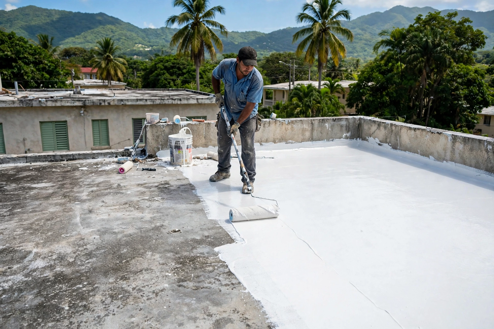

Gurabo · Puerto Rico
Sellamos tu techo con acabado en blanco, lo lavamos a presión antes, y dejamos tu patio como nuevo. Todo con un solo equipo.
Galería
Del lavado a presión al acabado blanco: así queda un techo sellado por J&A.
Lo que hacemos
Sellado completo con acabado en blanco: protege contra filtraciones y baja el calor dentro de la casa.
Pedir cotización →Limpieza profunda de techos, marquesinas y patios: preparamos la superficie para un sellado que dure.
Pedir cotización →Diseño y mantenimiento de jardines: grama, plantas, poda y limpieza de patios.
Pedir cotización →Remodelaciones, pintura y reparaciones menores para renovar tu hogar completo.
Pedir cotización →Cómo trabajamos
Llámamos por WhatsApp, agendamos la visita y te damos precio claro antes de empezar.
Lavado a presión para quitar suciedad, musgo y sellador viejo.
Aplicación del sellador con detalle en uniones, tubos y desagües.
Dudas comunes
Tu presencia en internet
Esta página es una muestra de lo que ManuPro hace por tu negocio. Elige tu plan:
Contacto
Escríbenos por WhatsApp o llámanos. Estamos en Gurabo, Puerto Rico.